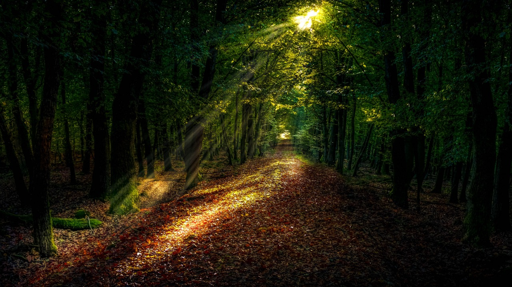

1 / 6

2 / 6

3 / 6

4/ 6

5/ 5

5/ 5

7/8

8/ 8

Forests cover 30.7 per cent of the Earth’s surface and,in addition to providing food security and shelter,they are key to combating climate change, protecting biodiversity and the homes of the indigenous population.By protecting forests, we will also be able to strengthen natural resource management and increase land productivity.
At the current time, thirteen million hectares of forests are being lost every year while the persistent degradation of drylands has led to the desertification of 3.6 billion hectares. Even though up to 15% of land is currently under protection, biodiversity is still at risk. Deforestation and desertification – caused by human activities and climate change – pose major challenges to sustainable development and have affected the lives and livelihoods of millions of people in the fight against poverty.
Efforts are being made to manage forests and combat desertification. There are two international agreements being implemented currently that promote the use of resources in an equitable way. Financial investments in support of biodiversity are also being provided.